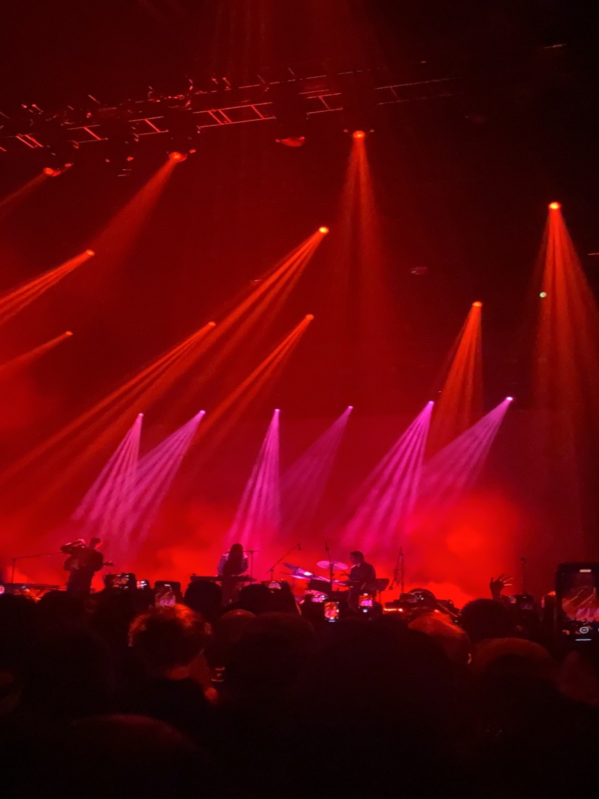
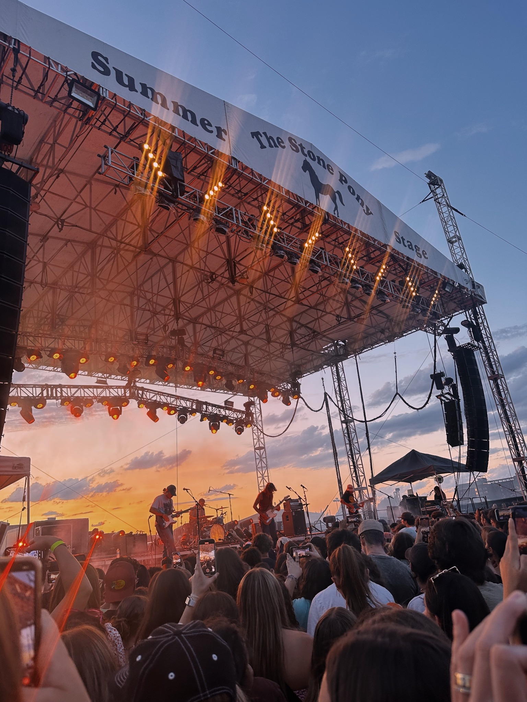

Music & Concerts
Favorite Concerts I've Been To


I saw Beach House (pictured on the left) at the Anthem in Washington, D.C., in 2022.
I went with my sister. They were incredible performers and it was a truly ethereal environment.
I saw The Backseat Lovers (pictured on the right) at Stone Pony Summer Stage in Asbury Park, New Jersey, in 2023.
I went with one of my best friends from high school. We had so much fun, despite having to wait in line for hours beforehand.
Favorite Artists
- The Strokes
- Cage the Elephant
- Tame Impala
- The Grateful Dead
- Tom Petty
Favorite Songs (in no particular order, because it is simply to hard to choose)
- "Just Like Heaven" by The Cure
- "Silver Soul" by Beach House
- "Cigarette Daydream" by Cage the Elephant
- "Touch of Grey" by The Grateful Dead
- "Champagne" by Declan McKenna
Favorite Venues
- The Black Cat
- Located in Washington, D.C., this venue features amazing independent artists.
- The Anthem
- This venue is also in Washington, D.C., and has such a unique feel that I love.
- The Bitter End
- A New York City classic, this venue has seen some of the coolest independent and mainstream artists perform there.